📋 项目概述
本项目针对国网营销档案数据治理需求，借鉴Transformer架构的优秀设计思想，提出了一套通用可靠的技术路线。主要处理客户档案中的地址、身份证号、手机号等关键信息，结合AI智能体实现高效的数据治理。
🎯 核心挑战
📊 海量数据处理
海量历史数据需要人工逐一核对，处理效率低下
🗄️ 分库存储复杂
数据分布在Oracle业务库和PostgreSQL数仓中
🔗 外部数据整合
需要结合顺丰等外部标准数据源进行比对验证
🛡️ 安全可靠回刷
要求高效、准确的数据治理流程和安全的数据回刷机制
🧠 Transformer架构启发
我们的数据治理架构借鉴了Transformer的核心设计思想：
设计理念：将Transformer的注意力机制、并行处理、层归一化等核心思想应用到数据治理领域，实现高效、智能的数据质量管理。
🏗️ 整体架构设计
数据源层 (Input Layer)
协调层 (Coordination Layer) - 类似Encoder
多头注意力治理层 (Multi-Head Attention Governance)
并行处理执行层 (Parallel Processing Execution)
质量评估与反馈层 (Quality Assessment & Feedback)
🎯 多头注意力机制应用
借鉴Transformer的多头注意力机制，我们设计了多维度数据质量注意力系统：
多维度数据质量注意力机制
├── 地址注意力头：专注地址格式、完整性、地理位置合理性
├── 身份证注意力头：关注号码格式、校验位、地区编码一致性
├── 手机号注意力头：验证号段归属、运营商信息、活跃状态
├── 关联性注意力头：检查多字段间的逻辑一致性
└── 时序注意力头：分析数据变更的时间模式和异常
🔧 技术实现架构
class DataQualityMultiHeadAttention:
def __init__(self):
self.address_head = AddressQualityAgent()
self.id_card_head = IDCardValidationAgent()
self.phone_head = PhoneNumberAgent()
self.correlation_head = CorrelationAnalysisAgent()
self.temporal_head = TemporalPatternAgent()
def process_record(self, customer_record):
# 并行处理各个维度
attention_scores = {
'address': self.address_head.analyze(customer_record),
'id_card': self.id_card_head.validate(customer_record),
'phone': self.phone_head.verify(customer_record),
'correlation': self.correlation_head.check_consistency(customer_record),
'temporal': self.temporal_head.detect_anomalies(customer_record)
}
return self.aggregate_attention_scores(attention_scores)
⚡ 并行处理架构
摒弃传统的顺序处理方式，实现真正的并行计算：
区域并行处理架构
├── 省级协调层：负载均衡和任务调度
├── 地市并行层：各地市独立处理本地数据
│ ├── 地市A：处理区域A的客户档案
│ ├── 地市B：处理区域B的客户档案
│ └── 地市N：处理区域N的客户档案
└── 县级执行层：最细粒度的并行处理单元
核心优势：通过地理区域分片和异步处理，实现大规模数据的高效并行治理，显著提升处理效率。
🔄 数据流程设计
📊 当前数据流
Oracle业务库
数据中台(T+1)
数仓加工
PostgreSQL
AI治理
暂存库
回刷Oracle
🔧 处理流程优化
📚 规则库RAG化
将业务规则转换为可检索的知识库
🤖 智能任务分发
中央Agent将任务分配给专门的子Agent
⚖️ 风险分级管理
将结果分为高危和低危等级
👥 人工审核机制
业务人员核实治理建议
📊 架构图表展示
以下是项目的核心架构图表，展示了系统的整体设计和各组件间的关系：
🏢 产品业务架构图

展示产品的业务流程和用户交互设计
🔧 技术架构图

详细的技术实现架构和组件关系
🏗️ 数据治理架构图

核心的数据治理流程和架构设计
🚀 Flink AI架构图

基于Flink 2.1的AI处理架构
🧠 RLHF系统架构图

人类反馈强化学习系统设计
⚡ 实时处理流程图

实时数据处理和增量更新流程
🛠️ 实施方案
基于Transformer架构思想的数据治理方案实施要点：
🎯 多头注意力实现
构建专门的数据质量检测Agent，每个Agent专注特定数据类型的质量评估
⚡ 并行处理优化
按地理区域和数据类型进行分片，实现真正的并行处理
🔄 残差连接保障
确保数据处理过程的稳定性，避免信息丢失
📊 层归一化标准
统一的数据质量标准和评估体系
核心价值：通过借鉴Transformer的设计思想，我们不仅解决了数据治理的技术问题，更重要的是改变了传统数据处理的思维方式，从"顺序处理"转向"全局关注"的范式。